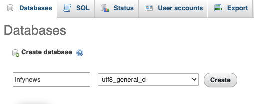
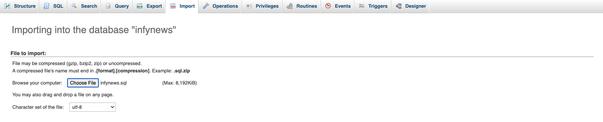

# Guide
The goal of InfyNews is to make the all news post.
# Technologies Used
This system uses multiple technologies to give the best possible experience.
- PHP 7.4 & 8.0 with Laravel Framework
- MySQL 5.6+
- jQuery
- Ajax
# Installation Guide
We tried our best to make the installation of the system as easy as possible. System Requirements It is assumed that you have primary knowledge Laravel installation knowledge since this application is built on Laravel.
# System Requirement
It is assumed that you have primary knowledge Laravel and JS application installation knowledge since this application is built on Laravel with JS.
You can read about laravel Requirements here (opens new window)
You need update below variables in php.ini file if you want to send bigger files (Optional).
upload_max_filesize = 50M
max_file_uploads = 50
post_max_size = 100M
# Setup InfyNews System
If you have purchased the InfyNews system then you will be able to find the zip named
dist.zip.
If you want to setup InfyNews into your local environment then you can take help
from here.
Now if you want to setup InfyNews on your server then you can directly copy the dist.zip folder to your web root directory on server and the following steps:
# 1. Copy files to web server
Upload dist.zip to your web server's root (public_html) and extract it there.
# 2. Setup Default DB
- Open PHPMyAdmin on your server and do a login.

- Click on the Databases tab.

- Create a new database and specify a Database name of your choice and Click Create button.

- Now on the left, select the database (infy_news) OR the one that you have created.
- Click Import in the top menu

- Under Import, choose the default sql file from
dist/database/infy_news.sqland click button Go.
# 3. Setup environment .env file
- Open .env file from your server's root folder.

- Update your .env file
You need to change the following information into your environment (.env) file.
Make sure your app name wrapped between Quotes ("APP NAME").
- APP_NAME - Name of your Application
- APP_URL - Change this URL with your server URL (including trailing path if you are putting it in sub folder or root website)
- DB_HOST - Put your database hostname here
- DB_PORT - Put your database port here if it does not default to 3306
- DB_DATABASE - Change it to your database name
- DB_USERNAME - Name of your database user
- DB_PASSWORD - Password of your database user
You will also need to set up mail configuration, you can read more about here for that setup based on mail service that you use.
- MAIL_DRIVER
- MAIL_HOST
- MAIL_PORT
- MAIL_USERNAME
- MAIL_PASSWORD
- MAIL_ENCRYPTION
- MAIL_FROM_ADDRESS
- MAIL_FROM_NAME
If you want to store your files to direct your s3 bucket then you have to use following
.env variables.
You need to change FILESYSTEM_DRIVER and MEDIA_DISK value to
s3 when you are using AWS file storage.
- AWS_ACCESS_KEY_ID=
- AWS_SECRET_ACCESS_KEY=
- AWS_DEFAULT_REGION=us-east-1
- AWS_BUCKET=
- AWS_ENDPOINT=
- AWS_URL=
Or you can use your choice of storage driver to store your media assets if you want. All of your attachments will be placed into that.
Also, please set the google captcha keys too. Here is link to generate and get the keys of google captcha.
- NOCAPTCHA_SECRET=
- NOCAPTCHA_SITEKEY=
# 4. Super Admin login
You can do admin login by accessing given URL.
YOUR_APP_URL/login
email: admin@infynews.com
password: 123456
And you are ready to go.
# Setup InfyNews into Local Environment
You can setup InfyNews into your local by using both zip files, but we recommend to use dist file so you have to perform minimal steps.
Here are some steps to setup InfyNews into your local environment :
# 1. Install xampp/wamp (if you don't have it).
# 2.
Create folder InfyNews
- if you are using wamp then create Infynews folder under you_path_to_wamp/www/
- if you are using xamp then create Infynews folder under you_path_to_xamp/htdocs/
# 3. Unzip dist zip to InfyNews folder
# 4. Point the domain to the uploaded folder
You need to create virtual host first to setup InfyNews. You can find steps here to create virtual host.
- You can find steps
here (opens new window)
to create virtual host on
XAMPP. - You can find steps
here (opens new window)
to create virtual host on
WAMP.
Point your domain or subdomain to the InfyNews folder.
Please note that, InfyNews must be installed on a primary domain or subdomain. Installing on a sub-folder will not work, for example:
example.com/InfyNews (Invalid)
localhost/InfyNews (Invalid) if you are putting it in sub folder or root website)
example.com (Valid)
local.InfyNews.com (Valid)
InfyNews.test (Valid)
Open the link to the domain in the browser (Example: https://local.InfyNews.com).
# Key Features and Concepts
Here are some Key Features and Concepts that InfyNews provides.
Its a News Management application, so many users can register into system and use it as per their needs.
#Landing Page
Beautiful landing page from where users can get related post of information about the article post, gallery post and sort list post.
#Top Stories
Here we are listing the top news that is viewed most by users, so users can easily read latest and top news.
#Gallery
We are albums for galleries, So there will be multiple images within one album. you can use this to show some images for specific category, we are using attractive gallery UI.
# Featured Posts
Admin can mark some posts as features that will be highlighted into landing page with separate badges, so users can view directly it.
# Contact Us
Users can get the product/company information from the contact us section which is in the landing page.
#Admin Panel
# Dashboard
Dashboard contains the powerful information of whole project from where you can get short and quick overview what is going on your application. Here you can see the latest registered users lists and the page analytics views that your site receiving.
# Staffs Management
Here admin can manage the staff of the system. he can add / update / delete staff.
Also he can change staff status to in-active if something bad activity is reported. In-active users can no longer access to login to system so y this way we can prevent the security.
# Posts Management
We are giving 3 kinds of post creation as of now. Article, Gallery and Sorted List posts are supported right now.
You can create post with SEO settings and other additional features like auto publish feature that will automatically change post status to publish on given time.
Other major features are also supported here that, you can mark post to show it on headline on home page, or show it on slider on home page, or you can manage the visibility of posts from here.
# Albums Management
In Albums you can define set of images.
You have to create the album category first then you can assign that category to album.
While uploading images you can select the album so that particular images will be linked to that album.
In Home page there is Gallery menu where we are showing the all the images per albums with attractive UI.
# Pages Management
Here admin can create customize pages and update / delete pages and front side he can handle the pages.
# Menus Management
If you want to add your custom menu with any custom name to the front website then yes its possible via this interface. you have to create new menu and link it to the navigation menu.
# Navigations Management
Navigations menus are so important for any CMS sites, so we have take care of it and providing easiast interface to manage the navigation menu.
You can also manage the ordering of the menus by dragging it to up or down. There are two/ theree statis menus which orders will be never changes. e.g Home / Gallery.
# Polls Managements
Sometimes its will be good idea to gather data of our site and other informations from the users via taking feedback from them.
For this we have to create the questions lists we are calling it polls. And you can add related answers for it.
Polls will be visible to users in website there they can add their feedbacks and submit it, we are also showing the results per answers there.
# Category Managements
Categories are most important when we have bulk data in sites, so we can filter data by categories.
While creating posts we can assign categories to it, we are also supporting the sub categories of category.
#Sub Category Managements
You can create sub category when needed and assign it to posts. posts will be filtered by the category and sub categories. by this way we can find the more accurate posts, and it will also help users to find related posts of related categories or subcategories
# SEO Tools Managements
In this tech world its more difficult to ranked up our site and get in top. as we have lots of competitors.
The only way is the SEO, we are supporting the SEO management of pages, so you can configure the keywords as per your need and add / edit keywords as per your need.
We are using that keywords to front websites that will help your site to rank up in search engine.
# Language Managements
Languages are most important as each user don't want same language, so here we are with Language Management tool.
You can add your language and also add your translations keys as per your language.
# News Letters Managements
We have subscription options into front website from where users who are interested in our site is going to subscribe to our application.
Admin can see the lists of subscribers in the admin panel, when admin create any newsletters it will be sent to all the subscribers, so they will get notified by latest updates.
#Mail Managements
By using this module you can manage all type of mail and give permission to visitor send mail or not and much more.
You can add your mail settings from here like the mail driver, mail from name, mail from address, username and the password settings.
# Role & Permissions Managements
We are supporting the roles and permission features. so, You can create a different kind of roles as per your need. you can create role by selecting different permissions whatever you want to select for given role.
# Comment Managements
As we have the posts listing its important to have the comments on it.
Users can do comments on the posts and all users can see it default. if admin found that comment is kind of vulgar then he can hide that comment from the admin panel.
Also admin can decide that default added comments should be auto approved or be in pending state.
# Contact Managements
Here admin see all contact information and manage all contact information.
#Setting
Admin can manage all the system setting from this menu.
There are lots of basic setting there like Application settings which contains the logo, favicon, emails and other information settings.
There are CMS settings from where you can add text of the privacy and terms and conditions text.
There Contacts, cookies settings and social media links settings too.